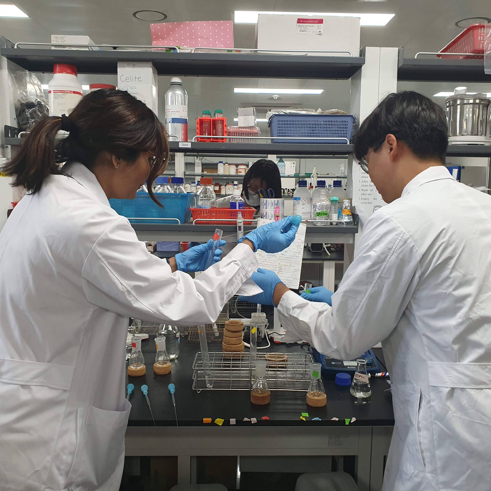
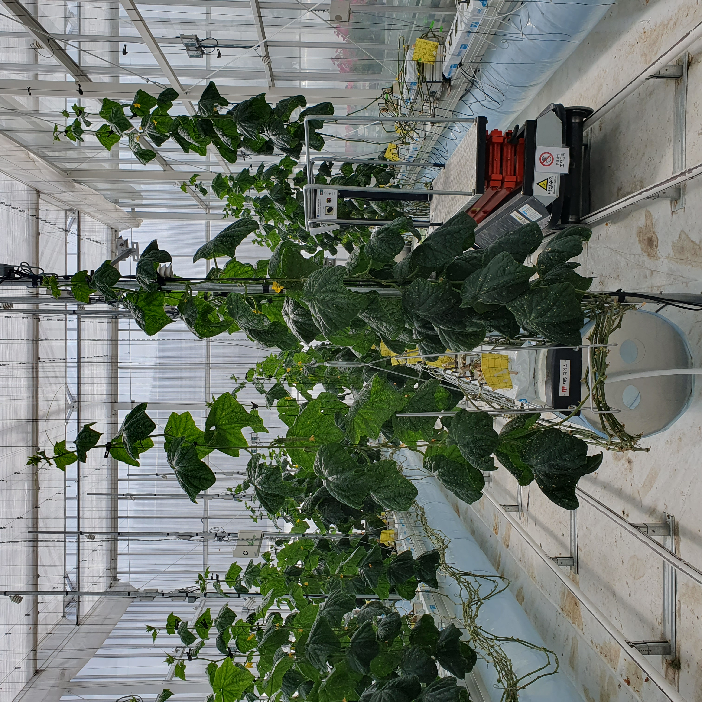
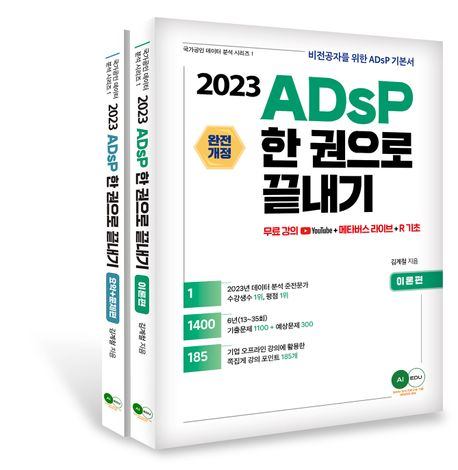
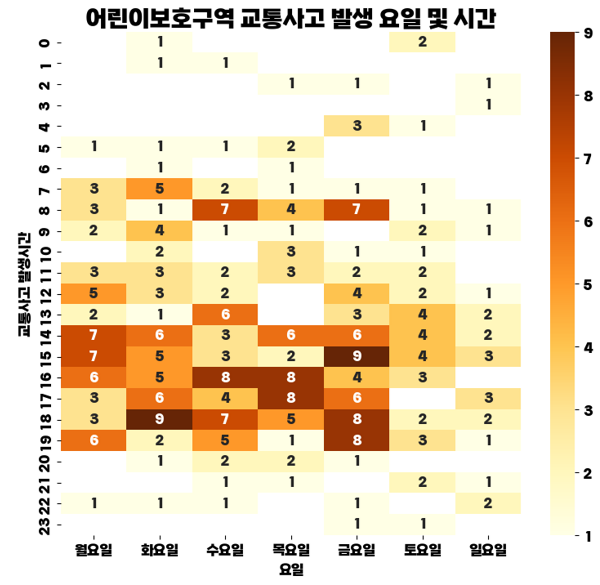

강요셉(Kang Yosep)
MBTI : 용의주도한 전략가, INTJ 👨💻
취미 : 블로그 작성
소개 : 개발자가 되고 싶은 농대 대학원생
🔗 https://www.instagram.com/impose_sep/
빅데이터 분석가 공부 계기
데이터 분석 관련 관심 분야
개발자가 되기 위한 나의 노력
수행한 미니 프로젝트

빅데이터 분석가 과정
을
공부
하게 된
계기
🖍
- 대학교와 대학원 모두 농업을 전공하였습니다. 실험을 진행하면서
다양한 데이터를 얻을 수 있었는데, 당시에는 데이터에 담긴 의미를
세세하게 파악하기 어려워, 통계처리만 진행해 아쉽게 느껴졌습니다.
그래서
빅데이터 분석가 과정을 공부하며 데이터를 분석하는 역량을
키워, 데이터에 담긴 의미를 파악하고, 가치를 발굴하고 싶습니다.
데이터 분석
관련
관심 분야
📊
- 전공과 관련된
스마트팜 관련 빅데이터 분석 분야 관심이 있습니다.
현재 한국은 노지재배에서 스마트팜으로의 과도기에 있을 뿐만 아니라
먹거리에 대한 관심이 증대되었습니다. 또한, 기후변화에 따른 재배
환경의 변화로 인해 스마트팜의 필요성이 대두되고 있습니다. 그래서
해당 분야를 분석해, 농산물 생산성 향상에 도움이 되고자 합니다.


개발자
가 되기 위한 나의
노력
🏃♂️
- 현재
AI 빅데이터 전문가 과정 4기
를 수강중에서 있으며, 데이터
분석을 위한
파이썬 라이브러리를 학습
중에 있습니다. 자격증 관련
하여 현재
정보처리기사
필기 합격 후, 실기 준비중에 있으며, 관련
자격증인
ADsP, SQLD, 빅데이터 분석기사
등을 취득 준비 중입니다.
또한, 추후 통계 처리를 위해
기초 통계학
을 공부하고 있습니다.
수행한
미니 프로젝트
📚
- 현재까지 3번의 미니 프로젝트를 진행하였습니다. 첫번째는
성적
관리 시스템
을 진행하였고, 두번째는 pandas를 활용한
각 광역시별
관광지 현황
을 조사하였습니다. 세번째로는
교통 법령 시행이 실제
교통사고 감소에 효과적인지
에 대해 pandas로 분석 후, matplotlib,
seaborn 라이브러리를 이용해 시각화하는 프로젝트를 진행하였습니다.
